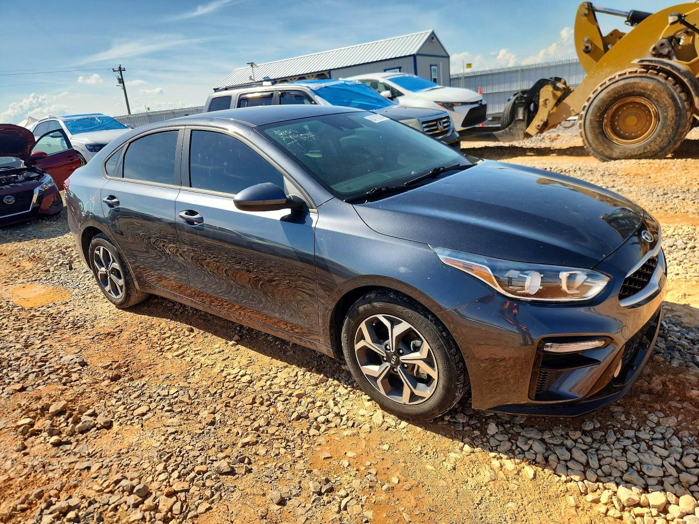

012021 Kia Forte LXSMO · Sedan · SPR · MO - Certificate Of Title · LOT 54713756Primary damage: Hail판매 완료 (Sold)
현재 입찰 미표시 · 조회 9/21우선 점검주행거리35,412mi복합 연비33 MPG입찰 상한$5,500조건부 총액$10,000유사 경매 수집 평균$3,750수집 4건 · 수수료 제외

Copart 상세·사진 11장 직접 재확인 · 전체 VIN은 공개 재게시 대조
사진·손상 관찰
외판·램프·유리가 갖춰져 있고 큰 충돌 변형이나 전개된 전면 에어백은 보이지 않습니다. 실내 사용감과 계기판의 문 열림 표시가 보입니다.
입찰 전 조건
우박 자국 외 유리·지붕 누수·IVT 냉간/열간 작동과 오일 소모를 점검하세요. 보관 위치는 Springfield 메인 야드가 아닌 Seymour sublot입니다.
왜 이 순위인가
우선 점검 그룹에서 비교점수 77.8/100. 수리·진단 선행 그룹은 점수가 높아도 우선 점검 그룹 뒤에 배치합니다.
손상·수리 범위 /30: 27 · 동력계 점검 부담 /20: 15 · 주행거리 /15: 13.6 · 연비 /10: 7.2 · 초기 예산 여유 /15: 5 · 타이틀 편의 /10: 10 · 원본 의존 차감: 0
구매 자격
MO Clean 일반 규정 해당 · 본인 계정 Eligibility 미확인
VIN
3KPF24AD2ME414651
Seller 미공개
사양 2.0L · IVT
연비 33 MPG · 자료 출처 ↗
도심 29 / 고속 40 MPG
2026-09-21 Copart 직접 조회
판매 완료 (Sold) · 현재 입찰 미표시
경매: Mon. Sep 21, 2026 12:00 PM CDT
타이틀: MO - Certificate Of Title
본인 계정 구매 자격 미확인 · 현재 입찰가는 최종 낙찰가가 아닙니다.
VIN으로 확인한 주요 정보
전체 VIN 17자리 · NHTSA 사양 조회 완료
- 출고 연식
- 2021
- 제조사·모델
- Forte
- 트림
- FE, LXS
- 배기량(L)
- 2.0
- 실린더 수
- 4
- 엔진 모델
- MPI Nu
- 주 연료
- Gasoline
- 구동방식
- FWD/Front-Wheel Drive
- 생산국
- MEXICO
- 차체 형식
- Sedan/Saloon
제조사 제출 안전장비 사양
- 차선 이탈 경고
- 기본 사양
- 차선 유지 보조
- 기본 사양
- 후방 카메라
- 기본 사양
빈 항목은 미제공 정보이며 장비가 없다는 뜻이 아닙니다. 위 내용은 출고 사양 자료입니다. 현재 엔진·변속기·에어백의 정상 작동이나 사고 이력을 보증하지 않습니다.
VIN별 이력 조회 · 2026-09-14
VIN 3KPF24AD2ME414651
NICB: 2026-04-28 우박 전손. 현재 Clean 서류와 보험 전손 이력은 별개입니다.
미수리 안전 리콜: 0건
NHTSA가 이 VIN에 대해 미수리 리콜 0건을 반환했습니다. 이미 수리된 리콜·일부 최근 리콜·비안전 서비스 캠페인은 포함하지 않을 수 있습니다.
NHTSA VIN별 결과 다시 보기 ↗ · 조회 시점 기준이며 입찰 전 재확인
NICB 도난·보험 전손
미회수 도난: 일치 기록 없음
보험 전손: 우박 전손 · 2026-04-28 · Hail
NICB VINCheck ↗는 참여 보험사 범위의 조회입니다. 일치 기록 없음은 무사고·무침수 보증이 아닙니다.
사고·침수·정비 기록
- 정확한 17자리 VIN 공개 검색 실시. 공개 경매·판매 자료 확인. 유료 보고서의 광고·잠금 항목은 실제 이력으로 인정하지 않음.
- 침수 없음 확정 불가. 공개 자료에서 구체적인 침수 사건 미확인; 전체 보험·DMV 이력은 미조회.
- 실제 작업 날짜·주행거리·수리 항목이 있는 정비 기록 미확보. 엔진·변속기 교체 여부 미확인.
- CARFAX·AutoCheck·NMVTIS 전체 유료 보고서 미구매. 소유자 변경·주행거리 연혁·담보·타이틀 연혁은 전체 확인되지 않았습니다.
공개 검색 자료: 자료 1 ↗ · 자료 2 ↗ · 자료 3 ↗
공개 자료는 현재 경매 재게시·과거 판매 광고를 포함합니다. 다른 VIN의 추천 차량, 광고용 “기록 발견” 문구, 잠긴 유료 내역은 해당 차량의 사고·정비 사건으로 계산하지 않았습니다.
동일 기준으로 다시 잡은 비용
입찰 상한: $5,500
Copart 수수료: $963
세금 적립: $647
운송 적립: $650
등록·검사: $400
멤버십: $100
구매 전 점검: $200
수리·초기 정비 적립: $1,500
합계 $10,000 · $100 단위 올림
원본 입찰 상한 $6,000을 유지하면: $10,600
연 15,000mi·휘발유 $3.50/gal 가정: 5년 연료비 $8,000, 초기비용+연료 $18,000. 유지보수·보험·재판매가를 제외한 참고치이며 총소유비용이 아닙니다.
경매 기록 불러오는 중…